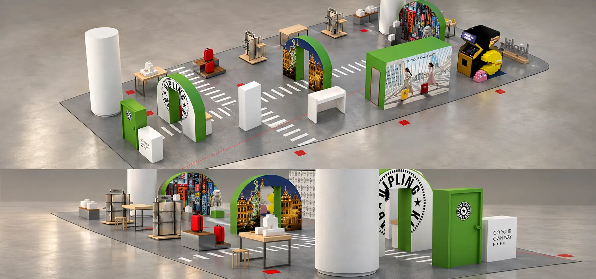
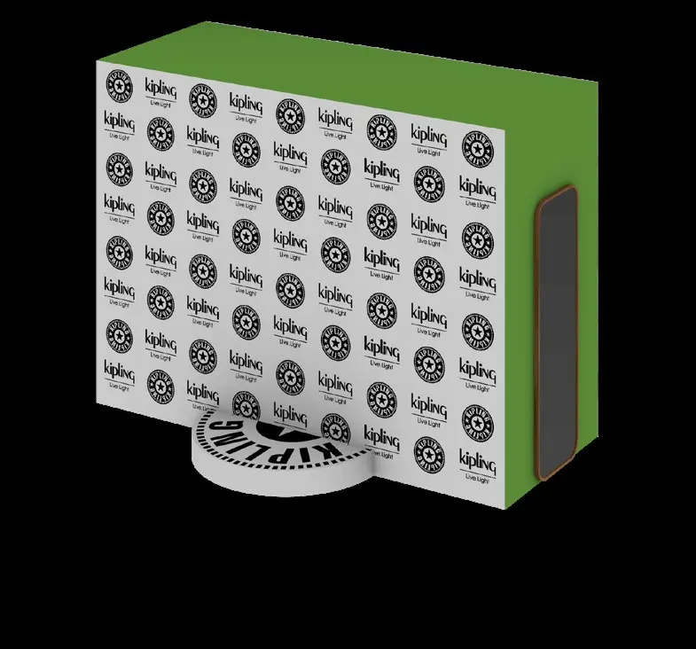
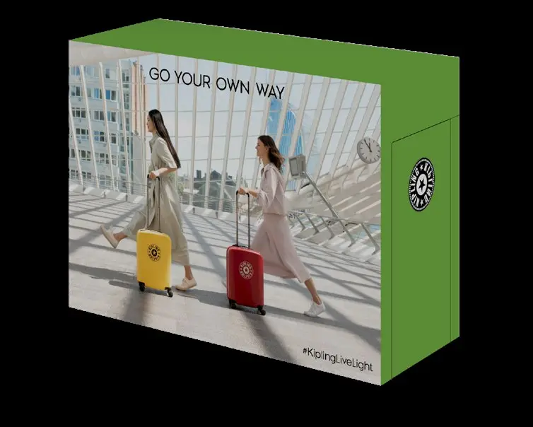
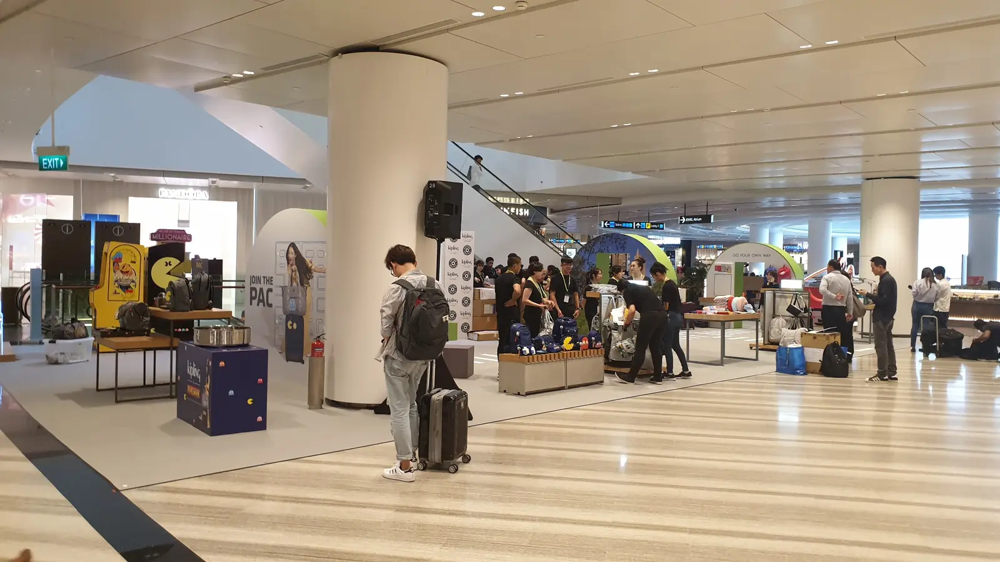
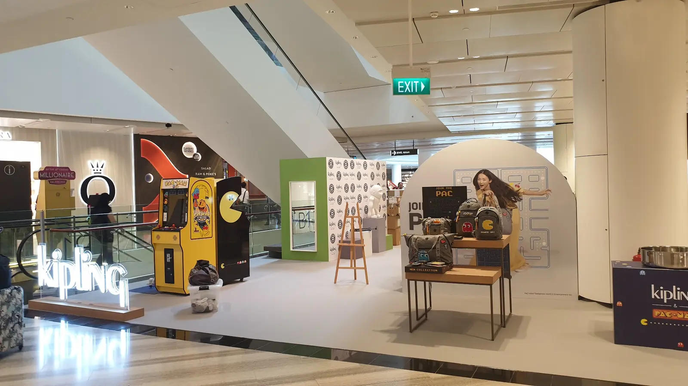
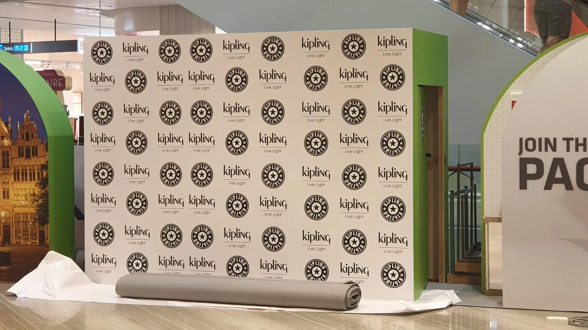
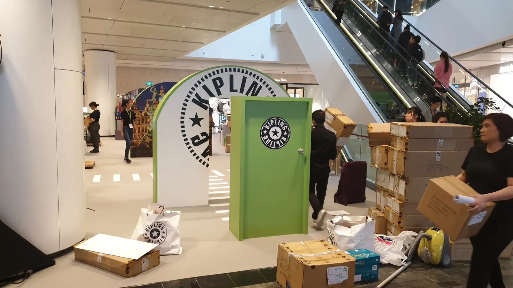
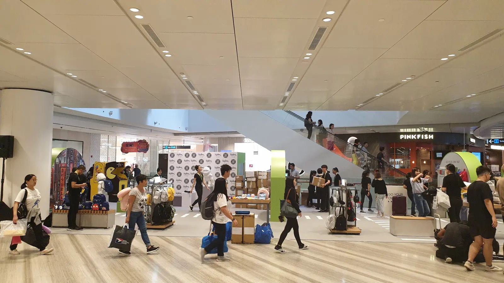

KIPLING · JEWEL CHANGI · SINGAPORE
A Playful
Brand Journey
A temporary branded environment combining product discovery, travel-inspired graphics and interactive activities around Jewel Changi's public circulation.

MY ROLE
Exhibit layout and visitor circulation, 3D visualization, fabrication and material selection, coordination of production-ready details, and on-site installation supervision.
FROM LAYOUT TO FABRICATION
One identity across multiple interactive zones.


BUILT ELEMENTS
The production package translated the layout into individual arches, gateways, pedestals, counters, signage and graphic applications. Existing columns were integrated into the activation, while themed displays and the Pac-Man zone supported exploration and play.
INSTALLATION AT JEWEL
Coordinating the final environment on site.





DELIVERY
Installation supervision covered positioning, assembly, graphic alignment and final coordination within the live public environment, ensuring that the built result remained faithful to the approved layout and brand direction.
